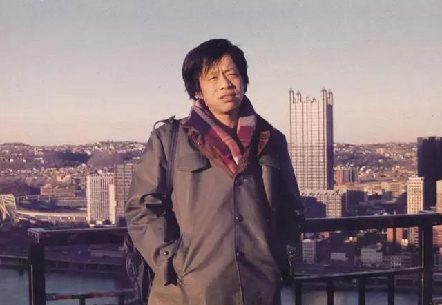

第一代程序员王小波
他和他的「 黄金时代 」

总是带点黑黄不健康脸色的王小波。
关于他的一些事
- 王小波在全家五个孩子中排行老四，在男孩中排行老二。他的许多小说中主人公取名“王二”，或许并非偶然。
- 1968年(16岁)，在云南兵团劳动，并开始尝试写作。这段经历成为《黄金时代》的写作背景，也是处女作《地久天长》的灵感来源。
- 1997年4月11日，王小波因心脏病突发辞世，享年45岁。 妻子李银河发表悼文《浪漫骑士·行吟诗人·自由思想者——悼小波》。
- 他是中国最早的程序员之一，关于他的计算机水平，可以看看知乎：王小波的计算机水平到底有多好？